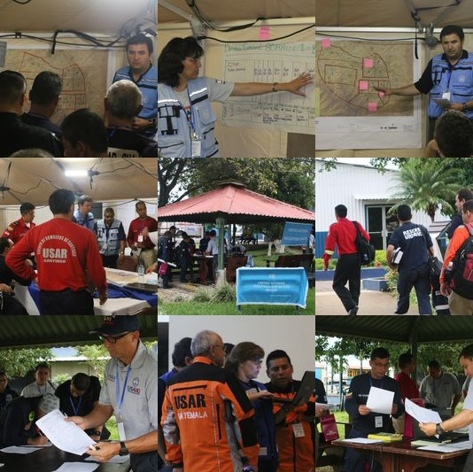

There are no translations available.
From 2 to 5 September 2014, Costa Rica hosted the 2014 INSARAG regional earthquake exercise in San Jose. The exercise was co-organized by the Government of Costa Rica, and OCHA as INSARAG Secretariat. This was the fourth exercise that took place in the Americas Region.
The event was opened by the Chair of the National Commission for Emergencies, Dr. Ivan Brenes Reyes, the UN Resident Coordinator, Mrs. Yoriko Yasukawa and the Chair of INSARAG-Americas Regional Group, General Alfredo Enrique Murgueytio Espinoza of Peru.
Around 250 participants participated to the exercise, representing the entire Government structure in charge of emergency response in Costa Rica, as well as all international actors ie.
- the National Disaster Risk Management System mainly those actors representing the Emergency Operations Center (COE) and the national coordination structure for international assistance (CATAI – Comité Asesor tecnico de Asistencia internacional)
- 4 national USAR teams,
- the United Nations Disaster Management Team (DMT) and UN Emergency Technical Team (UNETE);
- the UNDAC team and its partners in the region (Americas Support Team, Télécoms Sans Frontières, MapAction and White Helmets). The UNDAC team was joined by an associate member from the International Federation of Red Cross and Red Crescent (IFRC),
- 15 USAR teams (representing 13 countries from the region) and
- 2 Foreign Medical Teams (FMT); who were in fact from Costa Rica but acted as FMTs. .
Probably the biggest factor contributing to the success of the exercise was the full ownership by national authorities to run the exercise and use it as a learning opportunity for all involved. The exercise even saw the active participation of the President of the country, Luis Guillermo Solís Rivera
For the first time, the exercise incorporated as a separate actor the Foreign Medical Teams (FMT) with the aim to put in practice their role and coordination mechanisms integrated with the existing ones of the OSOCC and RDC. The use of the international airport facilities and the participation of the airport authorities as an entry point for all international teams (USAR, UNDAC, support teams, and FMTs) gave a strong aspect of realism to the exercise and also helped in the overall understanding of the difficulties linked to this.
During the exercise, USAR teams were familiarized with the use of the new forms currently being proposed as part of the revised INSARAG guidelines that are expected to be endorsed in 2015.
For the UNDMT and UNETE the exercise was an opportunity to get a lot more familiar with their responsibilities if a major emergency was to strike Costa Rica; a country which has fortunately not been hit by such major disasters in recent decades, but which is aware that it may hit.
The exercise was an excellent opportunity for all participants to learn and exchange experience on the response coordination mechanisms put in place in response to a 6.5 magnitude earthquake affecting the Alajuelita region, near San Jose, an area of 800,000 inhabitants. The agenda allowed for a 2-day preparation of participants to get acquainted with national and international coordination mechanisms, and then simulated the first 8 days of the response compressed into 2 days of exercise.
